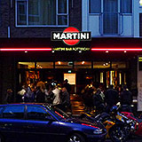
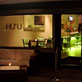
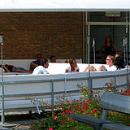
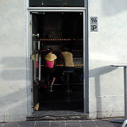
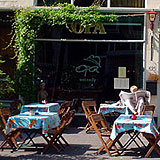
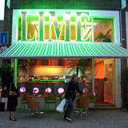
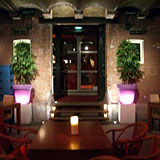
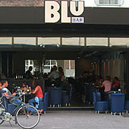

Rotterdam is a fairly large and cosmopolitan city, so it has plenty of cocktail bars and much variation in style and quality.
This survey rates cocktail bars according to the bar's atmosphere, three key cocktails and random bonus points, with a maximum of ten points. This simple rating system is enough to pick out the best and worst places, with a perfect score being hard to achieve.
    
| location | atmosphere | margarita | caipirinha | piña colada | pros (for bonus points) & cons | price | points |
|---|---|---|---|---|---|---|---|
| Bar P Eendrachtsweg 30 |
2 | 2 | 2 | 1 Cool interior and small Soho-style terrace. | 7+ | ||
| Toko 94 Witte de Withstr. 94b |
2 | 1 | 2 | 1 Excellent but loud music. Funky decor. | 6+ | ||
| Level Pannekoekstraat 76 |
1 | 2 | 1 | 1 Respectable terrace on quiet street. Mint and chocolate are not an appropriate piña colada garnish. | €7-8 | 5+ | |
| Zin Lijnbaan |
1 | 1 | - | Cocktail quality goes downhill when the star barman is not working; not enough crushed lime flavour in the caipirinha | €8.00 - 8.50 | 2+ | |
| Elit Wijnhaven 3 |
0 | 0 | 0 | The cocktails are not good enough: they have so little alcohol it’s a con, and are too sweet | €7.50 - 8.50 | 0+ |
| location | atmosphere | margarita | caipirinha | piña colada | pros (for bonus points) & cons | price | points |
|---|---|---|---|---|---|---|---|
| Tiki’s Hartmanstraat 16 |
2 | 1 | 1 | 2 Funky Hawaiian surfer bar theme with rock music for a change, because you can have too much lounge | €6.50 - 7.50 | 6+ | |
| Martini Bar Meent 71a |
2 | 1 | 1 | - | 1 Decent and friendly cocktail barman, willing and able to go off-menu. Too much Cointreau in the Margarita. Expensive. | €9 | 5 |
| location | atmosphere | margarita | caipirinha | piña colada | pros (for bonus points) & cons | points |
|---|---|---|---|---|---|---|
| Level Pannekoekstraat 76 |
1 | 2 | 2 | 2 | 2 Extensive menu and barman asked for feedback, but weird decor; excellent dinner | 9 |
| Soho Pannekoekstraat 53a |
2 | 2 | 1 | 2 | 1 Outrageously cool lounge-terrace and interior, but expensive and the caipirinha was too sweet | 8 |
| Opa Witte de Withstr |
2 | - | 2 | - | 2 Strong caipirinha and excellent value, but limited availability | 6 |
| HU'U Nieuwe Binnenweg |
1 | 2 | 1 Magic ingredient - the home-made sugar syrup adds a little something to the caipirinha | 4+ | ||
| Stockholm Oude haven |
1 | - | 1 | - | 1 Barman asked for feedback, but cocktail menu is rubbish and some servings are tiny | 3 |
the best
The good places are serious enough about cocktails to have a barman who will make anything you ask for, and who can make all of the classic cocktails - even one as uncool as a piña colada.
the worst
The bad places are more concerned with image than having any kind of genuine class, which can result in the arrogance to think that their own cocktail recpies are better than the the last hundred years' best cocktails. Worse, they mix cocktails that feature branded pre-mixed ingredients. If you cannot even make a decent margarita then you are not even trying.
key
= not on the menu
= awful
= okay
= excellent
to do: Quote, Rosso, Rotterdam Hilton, The Lighthouse, Buleria, Breakaway Cafe, Cinema.
  